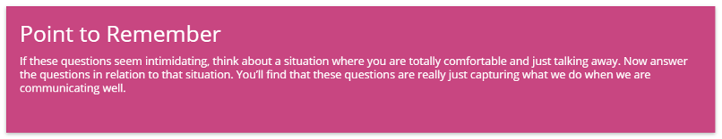
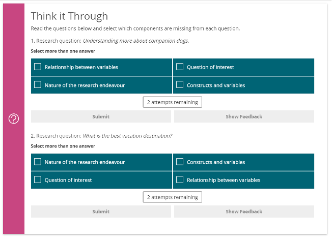

A quick true of false questions with feedback.
Reflective questions at the beginning of each module to encourage learners to think about their own research, or hypothetical research. Key advice and guidance from the SME is always given for these question, called ‘Zina Says’ or ‘John Says’ etc. this also appears at the end of each module, and draws from the questions from the beginning, encouraging learners to think about what they have learnt within the module and if they can apply this to their own research/ work.
Examples of key topics, skills, strategies of information within that topic. The example is always explained.
Pulls out a key point that is essential for learners to understand. Or a key hint or tip.
A more substantial knowledge check, at the end of each module. This can be any activity type.
These are useful for chunking large, related pieces of content e.g. categories, steps, key terms etc., to avoid scrolling through large portions of flat text (best when there are two or more concepts) and make content more interactive.
These are useful for presenting processes, stages, steps or cycles, or for an example that builds in each slide. One slide is used per step/stage. These can include images or be done without (if including images, images have to be included for every slide in the section).
These are useful for presenting processes, stages, steps or cycles, or for an example that builds in each slide. One slide is used per step/stage. These can include images or be done without (if including images, images have to be included for every slide in the section).
Similar content to narrative slides but the learner clicks on each tab to reveal the content. Each tab must have a short title.
These are useful for presenting steps, questions, or categories, with an explanation on the back when clicked. These can also contain images.
These are useful for presenting steps, questions, or categories, with an explanation on the back when clicked. These can also contain images.
A checklist of information that must be considered and worked through systematically These are used for instructions, walking through related concepts, identifying a to-do list
An interaction that breaks a process down into steps. These are useful for presenting steps, processes, or timelines, where the learner reads through the first item before clicking to view the next.
Information within the image is concealed within a hotspot. These can be more complex diagrams as per this example, or simpler (but relevant) images, where learners explore the elements of the image by clicking on ‘hotspots’. The hotspots each contain an explanation about that ‘part’ of the visual.
MCQ questions can contain a single correct answer, or multiple correct answers. Feedback is given after submitting an answer (this feedback also needs be to be written when writing these activities) Important: When writing MCQs, please be sure to also provide us with 3 plausible-seeming incorrect answers, and not only the correct answer. Please indicate which is the correct answer It is important to keep the number of answer options even – four options is ideal.
MCQ questions can contain a single correct answer, or multiple correct answers. Feedback is given after submitting an answer (this feedback also needs be to be written when writing these activities) Important: When writing MCQs, please be sure to also provide us with 3 plausible-seeming incorrect answers, and not only the correct answer. Please indicate which is the correct answer It is important to keep the number of answer options even – four options is ideal .
Standard True or False question where the learner is presented with a statement and selects the answer. Feedback is given after submitting an answer (this feedback also needs be to be written when writing these activities).
These are useful for matching words to phrases and explanations, or matching types to examples. The correct answers are shown once submitted.
These are useful for testing processes or steps that have been taught, requiring the learner to place the items in the correct order. The correct answers are shown once submitted.
These are useful for getting learners to assign items to categories and apply what they’ve learnt to new examples. The correct answers are shown once submitted.
These are useful for reflection or application exercises. Generic feedback can be given once the input is saved, so if you select this activity type please also think about the feedback that will appear in the popup as well.
Displays content to the learner based on decisions made Can include videos as in the example. These are complex immersive interactions and we advise only one per module. We will provide a template for these to be written into and guidelines for the structure These are effective for application, practicing decision-making, processes and procedures, to reinforce concepts and improve retention They are often most suitable at the end of the module, though we may suggest other areas they may work well. .
An interactive activity that actually takes learners away from the course homepage, but keeps them on the same screen, where they complete a series of questions and are given a score at the end.
A video recording.
An audio recording with no video.